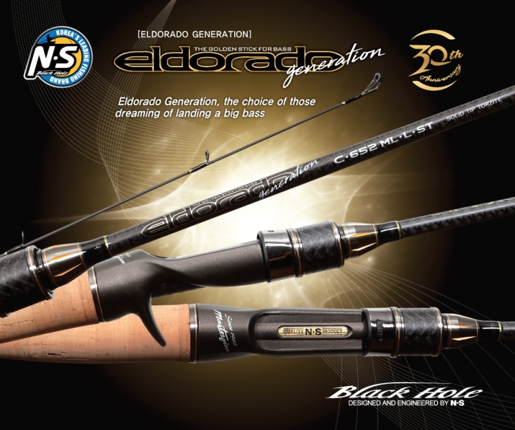

RS, the best rod for mandarin fish in Korea! It is a fishing rod built to best specification with affordability, priced at about KRW 100,000, and adopted medium-elasticity and high-elasticity carbon blank same as that of finesse plus, starter guide applied as KLAG 25(KLAG 20 was used for S-502 UL spooning lure), and FUJI "K" GUIDE, and ALCONITE guide ring. Moreover, the reinforcement, same as WXW (Wide X-Wrapping) finesse plus, was applied.
S-502UL-ST (Coreoperca herzi) / GRIP 80mm Furthermore, it added the specification dedicated to spooning lure and solid tip suitable for operation of small minnow and spinner in lightweight jig head. S-632 SSO MINNOWING / GRIP 125mm An undisputed Korean-style standard model for mandarin fish minnowing rod! An all-weather model that can be rigged with minnows ranging from small minnow to 80mm minnow. S-672L (All-round Light) / GRIP 145mm An all-weather model that can be used for any lures including the jig head, minnow, spoon, etc.

Eldorado Generation, the choice of those dreaming of landing a big bass Adopting the cutting-edge 8-axis carbon, it improved sensitivity, balance, action and design indispensable for bass fishing.
S-632 UL-ST (GRIP 180mm)This model puts an added emphasis on sensitivity. Adopting the 24-ton carbon solid, it increased the transmission of vibration on the fishing rod from the bite by more than 1.5 times. It applied the 9 guides to ensure strong stiffness that hold the blank firm. It is optimized for the fishing tackle operation, such as small rubber jig and down shot, etc., which emphasizes sensitiveness. Adopting the 8-axis carbon(CP 020 4YA-5), this product provides the power strong enough to subdue the targeted fish despite the thin blank. C-652 ML-L-ST (GRIP 210mm) This fishing rod allows anglers to fish with finesse, which is difficult to be achieved with bait rod.Adopting a 24-ton carbon solid, it increased sensitivity by 1.5 times, enabling anglers to figure out any sign of fish bites, although it is a bait rod. It is most suitable for bait finesse fishing, such as small rubber jig, down shot, small minnow, etc. Although it is a finesse rod, it adopted the 8-axis carbon(CP 020 4YA-5) to ensure excellent resilience of rod. C-682 XM (GRIP 250mm) It provides action with medium and medium heavy power of rod, drastically excluding the basic medium power of rod essential for bass fishing. It is a multi-type rod XM that can be used for any points and across the wide spectrum, including the hard bait and soft bait. It provides the most satisfactory performance when using the fast-moving lure of pilot style such as spinner bait, vibration, buzz bait, no-sinker fishing tackle, middle crank bait, etc. Adopting the 8-axis carbon(CP 020 4YA-5), it allows the lure to be pushed quickly during tip action or cast, enabling stable overhead casting and long casting. The strong stiffness(blank) enables strong hook-setting, making the hook driven deeper into the fish’s mouth. C-682 XMH (GRIP 270mm) The strong stiffness, rarely found in major upgraded models of MH(power of rod) for bass anglers, enables even the record-setting catch to be subdued without difficulty. This model is ideal for the lift-and-pull situations basic for the floor fishing, and provides optimal action for operation of fishing tackle such as rubber jig, Texas rig, free rig, heavy down shot, etc. This product was designed as a model with a powerful rod blank, providing excellent maneuverability, balance, sensitivity, etc.
ARCO, a tournament type rod optimized for area field! ARCO of NS, dedicated to trout fishing and reborn to keep pace with the changing trend of rainbow trout fishing. Professional rainbow trout fishing, using the spoon lure and crank bait, have recently gained popularity. This model was developed to be lighter, sturdier, and better detect the delicate vibration, rather than being simply soft. Featuring even more specialized specification, this new-concept rod will allow anglers to gain even more pleasant rainbow trout fishing experience in the managed fishing ground and in the tournament.
ARCO S-602 UL (GRIP 120mm) This model was designed for use of lightweight spoon lure weighing about 2g. Delicate vibration transmission on smooth tip and back of rod enables immediate tip reaction to the sensitive trout’s bite of bait during the reeling motion of spoon lure, resulting in faster hook setting and greater success in striking the fish. The back of rod, contrasting to the smooth tip, is sturdy enough to provide power necessary to subdue medium and large rainbow trout. It is also optimized for ARCO SR Crank. ARCO S-622 L (GRIP 120mm) This model is a normal type model finding the most wide-ranging applications. It is optimized for rainbow trout-based lures ranging from small spoon or crank bait to bottom lure. It is a normal type light power model that reduced excessive movement and made up for what is lacking during various actions. It can be used from SR to DR range, a main model giving real pleasure of game fishing.
The ever-evolving boron-based SSO MINNOWING Rod provides optimal sensitivity and operability, allowing the users to figure out stream flow easily! SSO MINNOWING Rod has evolved to such a point that it adopted boron fiber. We asked our lab to develop boron fiber in 2013 when SSO MINNOWING Rod was planned for the first time. But we gave up on the use of boron fiber after it turned out that the fiber was in short supply and that the carbon fiber could also create dynamic movements of blank as much as desired. No answer could be found easily to these challenging questions, “How can we develop a fishing rod accommodating to the never-stopping flow of stream?” and “How can we achieve both operability and sensitivity?” Leopard is the rod that offered close answer that none of other SSO MINNOWING could. Leopard combines the sensitivity of FINESSE PLUS and excellent operability of TYPHOON LIMITED and has the following features . 1. BORON FIBER : There was an increase in straightness of rod, not easily bendable even in the face of major flow, as shown by the data obtained by testing various reinforcement techniques applying high tensile strength of boron fiber. Through that, we achieved ultimate operability based on excellent resilience of top section. It is also fitted with robust butt power allowing you to maintain control over big fish in the fast water. 2. 40t CARBON FIBER : Sensitivity, achieved by high elasticity, is very important for anglers to feel the bites of fish or vibrations from the bait trapped beneath the seafloor. Leopard Carbon Mix used 40t carbon basically to maximize sensitivity in both fore grip section and rear grip section, and is finished with exquisite workmanship to maximize resilience of tip section and prevent the risk of damage, thus eliminating the greatest problem in high elasticity rods. 3. Harmony between modernity and classics : We proposed the standard design for Korean style mandarin fish rod, which featured the FINESSE PLUS grip design on the base, end grip made of carbon mono cork in two color tones, expressing eternally unchangeable beautifulness, and bee-tree to create a classical feel.
BMT-5112 / SSO MINNOWING(Minnowing Twitcher) / GIRP 130mm This rod enables optimal twitching of the 35 to 60mm-sized sinking minnow or 1.5m depth minnow measuring 40-60mm with 5'11" quick action in the field from tributary to main stream joining the river. Combining the smoothness and resilience of tip section and robustness of butt, this rod maximized the operability to allow the angler to maintain control over the underwater action of minnow lures under any circumstances. It’s the MINNOWING TWITCHER created only for twitching. BMD-682 / SSO MINNOWING(Minnowing Drifter) / GIRP 150mm The MINNOWING (spoon) drifter optimized for 50 to 70mm-sized 1.5-2m depth minnow simply retrieved or drifted with 5-12g stream spoon in main river and the 50-90mm minnow sunk in the main river zone that has fast current from the main stream with 6'8" quick action(faster than BMT-5112).
Reborn after 10 years of the Rods The Rods KN Freshwater is reborn after 10 years of the previous Rods. The non-skid fore grip and luxurious looking reel seat. With MNST tangle-free top guide and high-elasticity carbon applied, the rods are ahead of our time.
S-602L (GRIP-215mm) This rod is a all-round and light-action model to handle mandarin fish, Korean piscivorous chub, skygager, etc. The exactly balanced rod can make you challenge all types of stream fishing. It is suitable to use a spoon and small jig head. S-662ML (GRIP-215mm) As a standard for lure fishing, this model can be used with wide-range applications such as jig head, minnow, spinner bait, etc, and its main target fish is bass. The specially designed waist is strong and durable enough to fight against a large bass. Behind story on the birth of the Rods The Rods is the most selling and famous product of all NS Blackhole rods. Many people are curious about how the Rods came out first. Back in 2002, when South Korea was hosting the 2002 World Cup, the Korean soccer players played in red uniforms, so they were referred to as "Red Devils". During the World Cup, South Korea was covered with everything in red, which President Kim of NS got inspiration from. Since "Reds" trademark had been already registered, instead NS launched the "Rods" rods in all red, which was then quite rare. Now the Rods is considered as No. 1 for beginners. Can you believe that over 100,000 Rods have been sold so far? The popularity for the Rods is threatening our other fishing rods! KN concept guide (K-Guide concept+Y-Type Guide) High-elasticity Carbon/ Fast type, Ultra lightweight reel seat.
This product sets the standard for high-sensitivity bass rods The product uses the cutting-edge ES-06C / ES-05S reel seats equipped with the Fuji Guide system and ergonomic mechanisms. It reduces stress on wrists and arms caused by prolonged casting games. The carbon blank with high-sensitivity design allows for superior bottom crawling and situation awareness. The sturdy blank offers casting and control power sufficient for big basses. It is a product for anglers with sufficient understanding of bass fishing.
S-672ML / GRIP 164.5mm An all-round model for both smaller lures and medium lures. It provides for sensitive bottom reading when using down shot, split shot, or jig head. When using medium-sized minnows (SSO bait) and working in the top water, this product enables the user to create natural lure movements with twitching and jerking. S-682M / GRIP 174.5mm A strong spinning model with unprecedented power. This blank is designed to offer the same power as typical bait rods. It is stronger than typical spinning medium models, and offers more finesse middle point than bait medium. It allows for more diverse and powerful spinning game with buzzing and hard finesse. The user can utilize the medium power to enjoy aggressive bass fishing. C-642ML / GRIP 233mm A fast-type rod designed for minnow games and light games. Its design is focused on creating soft and controlled lure movements with twitching, jerking, and leaping actions. This 1.93m product is slightly longer than other minnow rods, which improves casting distance and provides the option of using minnows of various sizes. When hopping with a Texas rig, the lightweight metal vibe and the soft tip action promise effective suction. C-682M / GRIP 243mm A medium power, fast-type rod with diverse applications. Perfect for a wide range of setups from worm setup to hard bait setup. For walk fishing and one tackle, we recommend Dark Horse 682M. It can be used with 100mm or larger jerk minnows without major issues. It is the best model for fishing basses fast with various pilot lures such as rubber jigs and spinner baits. C-682MH / GRIP 243mm Dark Horse 682MH’ medium heavy model. Designed for powerful, medium or larger lures. The most effective one tackle rod among Dark Horse models. Recommended for spinner bait, rubber jig, Texas rig, free rig, or other medium-size setups or bigger. It sensitively delivers the situation at the tip, allowing the user to read the bottom terrain and bass bites with ease.
The Legend Returns! Tarantula Edge continues the fame of Tarantula with upgraded performance. It is strong, it is fast, and it is agile. The product is fitted with Fuji K Guide SIC, and uses Titanium Guide at the tip for enhanced rod balance and durability. CP 020 4YA-5 carbon 8-axis fabric prevents distortion, and creates more precise and fine actions. The rod moves in a way that removes even the slightest discomfort. The product uses Fuji’s latest slim seat for improved, st able grip. It minimizes fatigue and lets the user enjoy more energetic fishing.
TES-671 ML-ST / TES-672 ML-ST (GRIP 230mm) All-round type models of the Tarantula Edge line. Medium-light power and the use of solid tip makes them suitable for finesse down shot, Kaiser rig, Neko rig, no sinker, and other various worm setups. The solid tip catches fine movements and bass’bites faster than any other product. It is a common perception that 8-axis carbon has weakness in spinning. However, this product has power that allows the user to land big basses without difficulty. TEC-671 L-ST / TEC-672 L-ST (GRIP 210mm) Bait finesse models of the Tarantula Edge line. Bass fishing is largely affected by the conditions in the field, including the weather and the surrounding environment. Tarantula Edge’s bait finesse model approaches basses without giving them stress. To create sophisticated movements of smaller lures, this 6.7ft product uses a light power solid tip. It creates precise micro rubber jig, light texas, and down shot movements. TEC-671 M / TEC-682 M (GRIP 245mm) All-round type models in the Tarantula Edge line. More and more anglers are choosing one-tackle concepts for more convenient relocation and fishing. For these anglers, the 671M model offers the best solution for combining a worm setup and a hard bait setup. Compatible with 1/4oz to 3/4oz. The waist has sufficient medium power, which makes it the best one-tackle rod for the twitching and jerking actions of a hard bait setup as well as free rigs and no sinkers. TEC-6101 MH / TEC-682 MH (GRIP 250mm) All-round type models in the Tarantula Edge line. These popular rods are widely used for diverse walking and boat fishing trips. The Tarantula Edge models offer optimized balance when fitted with reels. This helps ensure precise lure casting, precise actions, and precise hook setting. The product guarantees more powerful fishing experience : free rig, Texas rig, rubber jig, spinner bait, and more! It uses high-elasticity carbon for improved sensitivity and balance, and makes fishing more enjoyable.
This fishing rod breaks convention with innovative changes The Superior has been reborn with innovative materials and new designs. This is a must-use rod for novices. Its ultra-light blank offers a level of sensitivity and casting power that goes beyond other fishing rods in the same price range.
S-662L (Grip 220mm) Offers natural regular action. Can be widely used under various situations including light worm setup or spoon lure setup. A light action rod suitable for NEKO rigs or no sinker setup. It has sensitive blank perfect for river species such as mandrin fish, Korean piscivorous chub (Kkri) and Korean aucha perch (Kkeokji). S-662ML (Grip 230m) A medium light power rod with a length of 6.6ft. A all-round spinning rod. It allows for detailed bottom reading with the fast actions of downshot rigs or jig heads. It also offers simple yet lively twitching and jerking actions when using minnows. C-672M (Grip 240mm) A bait casting rod with wide applications with fast-type medium action. Can perform various techniques-steady retrieve, lift & pull, buzzing and poll, etc. with 1/4oz-3/4oz spinner baits. Suitable for 2-3m longbill suspended minnows. C-672MH (Grip 250mm) A standard model for bait casting rod, with fast-type media heavy action. Suitable for creating hopping, dragging, swimming ,falling and other various actions with A 1/4-1oz rubber jig s The casting performance covers up to 1oz, and the product can be used with top water-type or swim baits of medium sizes and larger. The waist prevents hook tangling even when using guides with superior weed guard performance in obstacle areas. TS-686ML (Grip 210mm) / Tele A fishing rod with strong waist action as well as medium light basic action. It is the best rod that offers convenience and smart fishing experience to travelers. As indicated by the 42.5cm length (folded), it reduces restriction of movements.
Delivers all vibrations to the user! TAIFUN-S, a spiritual descendant of 2016 Finesse Plus, maximizes dynamic stability and vibration delivery with a X wrapping at the blank of the regular fast action. The product uses a “family look” design with VSS reel seats. The butt grips are designed with carbon blank to deliver even the slightest vibration from the fish to the angler. The product also uses a new SIC guide model produced in 2017. It minimizes interference from the lines and makes for smooth casting. A fishing rod for Mandarin fish at a reasonable price. A great value!
S-632UL / GRIP 140mm A standard multi-purpose model for minnow and jig head fishing. Suitable for small minnow, spoons, and jig head fishing. This rod is a perfect companion for fishing in big rivers and mainstreams. S-672L / GRIP 150mm This rod boasts sharpness and sensitivity at the same time. It is suitable for medium/small sized minnow and lightweight spoon fishing. It is highly recommended for anglers who enjoy lightweight jig head games. It is effective for fishing in the midstream, upstream, or branch streams. S-632 SSO MINNOWING / GRIP 130mm An all-round player for SSO minnowing. Supports all angler skills from small minnows, large minnows to longbill minnows, and from twitching to drifting. This is the only solution that offers both satisfaction and reliability. S-482UL-ST / GRIP 65mm A rod for Kkeokji (Korean aucha perch) fishing. Kkeokji is a species unique to Korea. Fitted with a high-sensitivity hard solid tip for ultra-light jig head games. In addition, the short length (less than five feet) and reel seat deliver the dynamic action of kkeokji to the user’s hands.
An all-round leisure fishing reel rod that can be used in all circumstances Multi-purpose reel rod for all leisure and travel fishing environment. Multi-player that can be used for rockfish, macker, mud skipper, crucian carp, carp and sinking fishing at all locations including a breakwater, a harbour and a pier
• Careless finish of existing freshwater, saltwater and multi-purpose reel rods has been perfectly improved. • By adopting an integrated reel seat made in Korea, a reel is precisely attached to a rod. • It has casting action for intuitive, repeated and accurate point attack. • For 330 Model, the action is designed to attack eel points, with advice from river and lake eel anglers and field tests. • It has advantages in long distance casting and minimizes line damage.